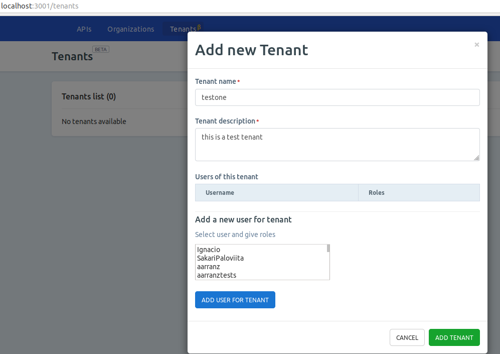
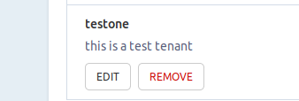
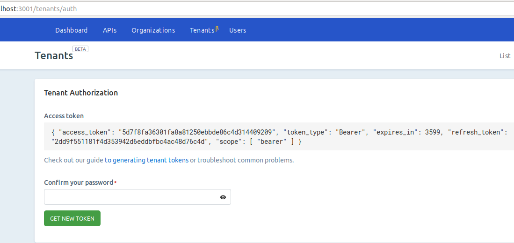
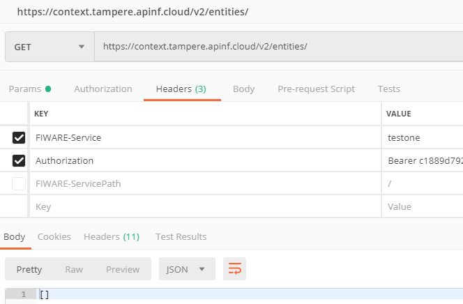
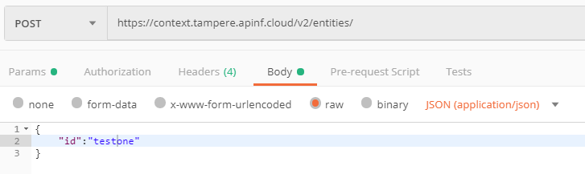
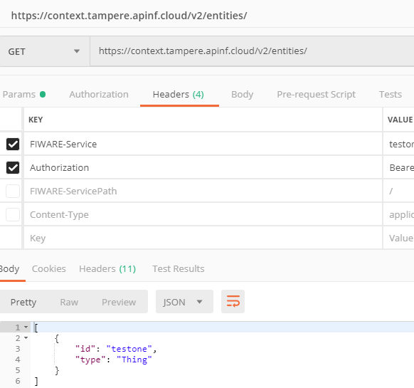

APInf - API management¶
We are proud to be part of FIWARE thus the look and feel.
You will find the source code of this project in GitHub. You will find the documentation of this project in Read the Docs and partially in Github. We are refactoring documentation. If you feel that there is information missing, please raise an issue at Github as we tend to get blind. We do this all day.
Quick Start¶
Easy way to get familiar with APInf platform is to use our SaaS
We understand that poking around to see how things work is not for everyone. Please see this document to get introduction to the basics. There is a short video too!
Admin Installation - standalone¶
We are updating this documentation, in the meanwhile please refer to this.
Admin Installation - docker¶
We are updating this documentation, in the meanwhile please refer to this.
Developer Documentation - how to call the API programmatically¶
APInf relies on Open API Spec documentation (previously Swagger) please see these links on how to access API management programmatically:
User Documentation - how to use the GUI¶
Basic flow after successful installation
- sign-up (if you are the 1st user, you’ll get admin rights!)
- sign-in
- add a proxy (if it does not already exist)
- add an API and connect it to a proxy
- test
Easy way to test the APInf platform is to try our SaaS
Check this video
Tenant Manager UI¶
GENERAL
Tenant manager is a new feature that is introduced with Apinf platfrom release 0.60.0. We are now bringing that feature out as Beta. This documentation is intended as introduction for system administrators, as you need to be able to configure additional components. Configuring additional components are not covered here.
Tenant is a Context Broker concept. Context Broker on it’s own does not provide any access control. Tenant manager is an answer to that call. Basic principle is that you need to pass an Oauth token with the request, Apinf umbrella will take the token and validate that against Keyrock here is a picture that shows the overall architecture:
Tenant manager is a micro service. Our platform uses Meteor stack and you may have been used to the fact that things on UI happen in real time, thanks to the sockets. This means that when ever a request is done, it needs to go to tenant manger component and response is expected. So you may need to manually update the page to see changes. Not a big deal, just be aware of this.
PRECONDITIONS
- you need to have keyrock instance running
- you need to have tenant manager running
- need to have Apinf umbrella running
- OPTIONAL: to test the data transfer to Context Broker, have Context Broker running
BASIC SETTINGS
This section assumes that you know basic usage if Apinf platform.
- Configure fiware / keyrock login:
- Configure tenant manager url:
NOTE! it is important to secure the traffic to and from tenant manager. When retrieving token, user needs to provide a password in the request. If this goes plain on the wire, it’s a security risk.
ADDING A TENANT
Navigate to Tenant UI, click Add, and fill in the details:
Hit Save. Request should complete and you should get a message saying things are ok:
RETRIEVING A TOKEN MANUALLY
Go to authorisation and provide a password. If all goes fine, token is retrieved:
RETRIEVING A TOKEN PROGRAMMATICALLY
Two options exist: password & username method or refresh token. We recommend to use refresh token for production use. Example:
curl -v https://accounts.yyy.zzz.cloud/oauth2/password -d “grant_type=refresh_token&client_id=${TOKEN_SERVICE_CLIENT_ID}&client_secret=${TOKEN_SERVICE_CLIENT_SECRET}&refresh_token=${REFRESH_TOKEN}” -H “application/x-www-form-urlencoded”
TOKEN_SERVICE_CLIENT_ID` and TOKEN_SERVICE_CLIENT_SECRET are the OAuth2 credentials assigned to your APInf application and REFRESH_TOKEN is taken from the first response, for example the one you have from ” RETRIEVING A TOKEN MANUALLY”
You can make the initial token requests using the “grant_type”: “password” option, and provide username and password.
ACCESSING DATA USING TOKEN
This example uses Postman, but you can do the request with also other tools. Let’s construct the request. Enter two headers: Fiware-service and Authorization. Let’s try 1st with GET:
What happens is that there is no data in the Tenant. Let’s POST some:
and try to retrieve again:
Ok, that’s it. If any questions, please mail us: info@apinf.io or raise and issues at github APInf API management ——————–
Why use Apinf API Management?¶
If you have APIs and you are looking for additional control on API access, API documentation and analytics in one package, this is for you.
The APInf platform offers a comprehensive tool for API management. Building on APInf Umbrella, it provides enhanced user interface features for API managers and consumers alike.
For API consumers APInf provides simple key management, key usage analytics and API discovery along with API documentation. Managers have simplified workflow for common tasks, such as key management, rate limiting and viewing API usage analytics.
Basic Architecture¶
APInf API management is composed of two main components; APInf platform and proxy. The proxy in use is APInf umbrella and it is controlled via APInf platform UI, no need to touch the Umbrella directly, unless you really, really know what you are doing.